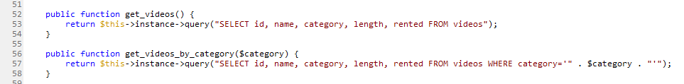
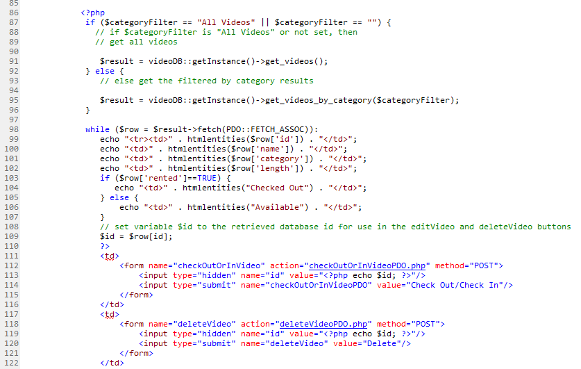
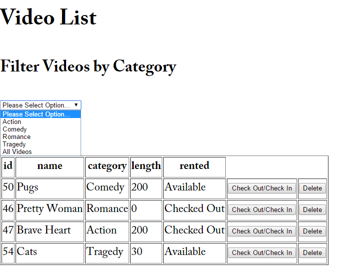

We are now interested in fetching from our video database, or in other words getting data out of the database. In the three code clippings below, you can see the PDO format used to do a series of different fetches on our database. The first one shows the code to get videos, which, of course, is the most broad fetch. Each code snippit following are a series of narrowed fetch queries: by category, with id, and get categories.
Below is a look at the PDO code written in the edit portion of our database program.
At the while loop portion of the code, notice that PDO::FETCH_ASSOC is the type of fetch that was chosen here. This means that an array is returned, indexed bu column name
for our video database fetch. There are other types of fetch that you can implement in PDO, Additional Resources section of the 'Overiew' page contains links that will provide more information
on these.
PDO::FETCH_BOTHPDO::FETCH_BOUNDPDO::FETCH_CLASSPDO::FETCH_INTOPDO::FETCH_LAZYPDO::FETCH_NAMEDPDO::FETCH_NUMPDO::FETCH_OBJHere is what the user sees when they go to pull information from the database.
The drop down menu seen here implements the different fetch abilities on our video database. So in this case, the fetch is the filter on the items in our
video inventory. Currently all videos are displayed to you. By selecting a category, action, we will implement the PDO fetch by category, public function get_videos_by_category($category)
and the image below will show the results from the query.
Now we will take a look at a PDO overview...
Toggle MenuOnward